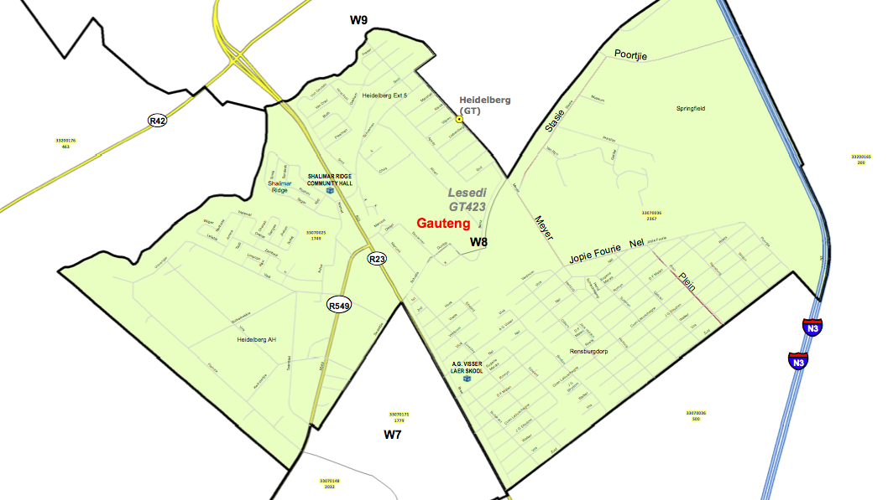

*** * * * * * * * * * * * * ***

Wards
The following ward maps will help leaders with decision making with regard to by-elections and local elections. Anyone wanting to contest a by-elections or local elections should contact Divided Party (DiP). If any other maps are required contact DiP. DiP will get the maps and upload it to the website.
This URL links to all the draft 2019 maps of wards of all the municipalities.